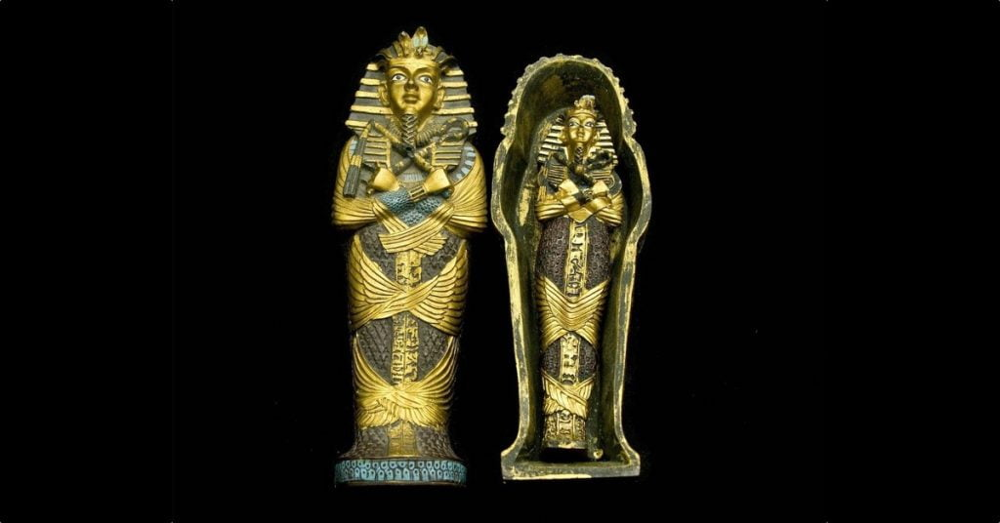
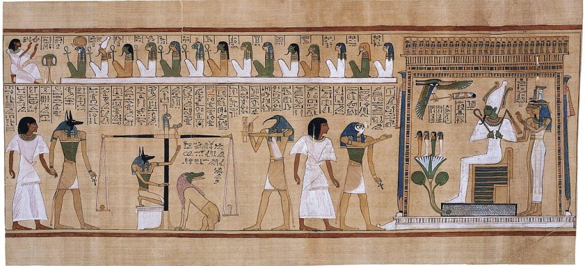

ဒီ ကျမ်းကို ပပိုင်းရပ်စ် (papyrus) ကျူရွက် နဲ့ ချုပ်ထားတဲ့ ပုရပိုက် ပေါ်မှာ ရေးထိုးထားတာ ဖြစ်ပါတယ်။ ဒီ ပုရပိုက် ကို ဖြန့်လိုက်မယ် ဆိုရင် အရှည် ၅၂ ပေ (၁၆ မီတာ) တောင်မှ ရှည်တယ်လို့ သတင်း ထုတ်ပြန်ချက်မှာ ဖေါ်ပြ ထားပါတယ်။
ဒီ ပုရပိုက် ရဲ့ သက်တမ်းဟာ နှစ်ပေါင်း ၂,၀၀၀ ကျော် ရှိပြီလို့ ပညာရှင် တွေက ခန့်မှန်း ကြပါတယ်။ ဒီ ကျမ်းကို ဆက်ကရာ ဒေသက ဂျိုဆာ လှေခါးထစ် ပိရမစ် (Step Pyramid of Djoser) ရဲ့ တောင်ဖက်က ရှေးဟောင်း ဂူသင်္ချိုင်း တစ်ခု အတွင်းကနေ ရှာဖွေ တွေ့ရှိခဲ့တာ ဖြစ်ပါတယ်။
ဒီ ကျမ်းကို မပျက်စီး ရအောင် ထိမ်းသိမ်း စောင့်ရှောက်မှုတွေ ပြုလုပ် ပြီးစီးပြီလို့လဲ သိရပါတယ်။ လက်ရှိမှာတော့ ဒီကျမ်း ပါ စာတမ်းတွေကို အာရဗီ ဘာသာ (Arabic language) ကို ပြန်ဆိုမှုတွေ ပြုလုပ်နေတာ အတော်လေး ခရီးရောက် နေပြီလို့ ဆိုပါတယ်။ ဒီ ကျေညာချက်ကို ပြီးခဲ့တဲ့ ဇန်နဝါရီ ၁၄ ရက်နေ့မှာ ကျရောက်ခဲ့တဲ့ အီဂျစ် ရှေးဟောင်း သုတေသီများနေ့ (Egyptian Archaeologists Day) မှာ ထုတ်ပြန်ခဲ့တာ ဖြစ်ပါတယ်။
အခု တွေ့ရှိမှုဟာ လွန်ခဲ့တဲ့ နှစ် ၁၀၀ အတွင်း ဆက်ကရာ ဒေသက ရှာဖွေ တွေ့ရှိ ခဲ့သမျှ ထဲမှာ အပြည့်စုံဆုံး ကျူရွက် ပုရပုက် ဖြစ်တယ်လို့ အီဂျစ် ရှေးဟောင်းဌာနရဲ့ ထုတ်ပြန်ချက်မှာ ဖေါ်ပြ ထားပါတယ်။
ဒီ ပိရမစ်ကြီးရဲ့ ပတ်ခြာလည်က ရပ်ဝန်းကို လူသေတွေ မြှုပ်နှံဖို့ အသုံးပြု ခဲ့ကြတာ နှစ်ပေါင်း ထောင်ချီ ရှိနေခဲ့ပြီ ဖြစ်ပါတယ်။ အခု ပုရိပိုက်ကို ရှာဖွေ တွေ့ရှိခဲ့ရာ ခေါင်းတလား ဟာဆိုရင်လဲ ဘီစီ ၇၁၂ ကနေ ၃၃၂ အကြား တည်ရှိခဲ့တဲ့ ရှေး အီဂျစ် ခေတ်နှောင်းကာလ (Late Period, 712 BC to 332 BC) တုန်းက ခေါင်းတလား ဖြစ်ပါတယ်။

အီဂျစ် မရဏကျမ်း (The Book of the Dead) ဆိုတဲ့ အမည်ဟာ တကယ်တော့ ခုခေတ်မှ ရှေးဟောင်း သုတေသီ တွေက ပေးထားတဲ့ အမည် ဖြစ်ပါတယ်။ ဒီ မရဏ ကျမ်းဟာ တကယ်တော့ ရှေး အီဂျစ်တွေ သေလွန်ပြီးနောက် တမလွန် ဘဝကို သွားရာလမ်းမှာ ဖြောင့်ဖြောင့်ဖြူးဖြူး ခလုတ်မထိ ဆူးမညိပဲ အရောက် လှမ်းနိုင်ဖို့ လမ်းညွှန် မဏ္ဍာန် တွေကို စုပေါင်းပြီး ခေါ်ဆိုတဲ့ အမည် ဖြစ်ပါတယ်။
၅၂ ပေ အရှည်ရှိတဲ့ ကျမ်းဟာ အတော်လေး ရှည်တယ်လို့ ပြောလို့ ရပါတယ်။ ဒါပေမယ့် ဒီ အရှည် (သို့) ဒီ့ထက် ပိုရှည်တဲ့ မရဏကျမ်း ပုရပိုက် တွေလဲ ရှိပါသေးတယ်။ အီဂျစ် မရဏကျမ်း ပုရပိုက် တစ်ခုဟာ ဆိုရင် အရှည် ပေ ၉၈ ပေ တောင်မှ ရှိခဲ့တယ်လို့ ပညာရှင် တွေက ဆိုပါတယ်။
အခု မရဏ ကျမ်းဟာ လွန်ခဲ့တဲ့ ဒီ ဆက်ကရာ ဒေသမှာ တစ်နှစ်အတွင်း ဒုတိယ အကြိမ်မြောက် ရှာတွေ့တဲ့ မရဏကျမ်း ဖြစ်ပါတယ်။ ၂၀၂၂ ခုနှစ်တုန်းက ဒီ ဒေသကပဲ အရှည် ၁၃ ပေ ရှည်တဲ့ မရဏကျမ်း ပုရပိုက် တစ်စောင် ရှာတွေ့ ခဲ့ပါသေးတယ်။ ဒီ မရဏ ကျမ်းကိုတော့ ဘီစီ ၂၃၂၃ ကနေ ဘီစီ ၂၂၉၁ အကြား စိုးစံခဲ့တဲ့ အီဂျစ်ဖာရို ဘုရင် တက်တီ (pharaoh Teti) ရဲ့ ပိရမစ်ကြီး အနီးက သင်္ချိုင်း တစ်ခုအတွင်း ရှာတွေ့ခဲ့တာ ဖြစ်ပါတယ်။
ပွက်ဟဖ် ဟာ ဖာရို တက်တီရဲ့ ပိရမစ် အနီးမှာ မြှုပ်နှံထားခဲ့တာ ဖြစ်ပေမယ့် ဘုရင်တက်တီ ကွယ်လွန်ပြီး ရာစုနှစ်ပေါင်း များစွာ အကြာမှာမှ အသက်ရှင် နေထိုင်ခဲ့တာပါ။ သူ့ကို မြှုပ်နှံထားတဲ့ သင်္ချိုင်းဂူ ဟာ အီဂျစ် ၁၈ နဲ့ ၁၉ ဆက်မြောက် မင်းဆက် တွေ လက်ထက်က အသုံးပြု ခဲ့တဲ့ သင်္ချိုင်းဂူ ဖြစ်ပါတယ်။ အဲ့သည် အချိန်က ရှေးမင်းတွေရဲ့ ပိရမစ်တွေ အနီးမှာ မြှုပ်နှံတဲ့ ဒလေ့က အလွန် ခေတ်စားခဲ့ဟန် တူပါတယ်။
အခု တွေ့ရှိမှုကို အီဂျစ် ရှေးဟောင်း သုတေသန ဌာနက ပညာရှင် တွေက ရှာဖွေ တွေ့ရှိခဲ့တာ ဖြစ်ပါတယ်။ ဒီ ကျမ်းရဲ့ ဓါတ်ပုံတွေ ကိုတော့ အခုထိ ထုတ်ပြန် ကြေငြာခြင်း မရှိ သေးပါဘူး။ ဒါပေမယ့် ဒီ ကျမ်းကို သိပ်မကြာမီ ကာလမှာ အများပြည်သူ ကြည့်ရှုနိုင်ဖို့ ပြတိုက်မှာ ပြသသွားမယ်လို့ သိရပါတယ်။
